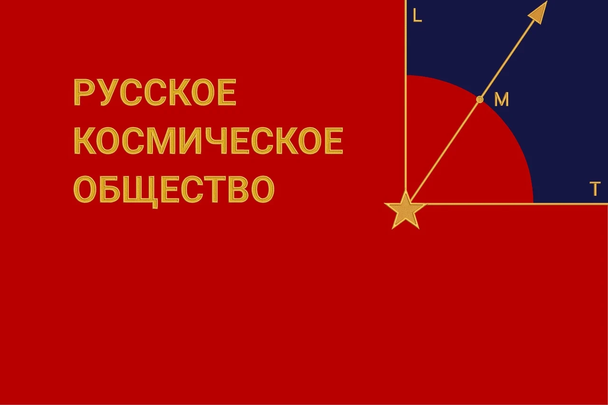

Мы, мужчины и женщины, представители своих семей и родов, части своих народов и цивилизаций, множество, стремящееся к единству – соединившись:
во имя священного дела Мира, ибо цивилизационные разногласия, породившие вражду и взаимную ненависть народов, дошли до предела, за которым гибель грозит самому существованию человечества;
во имя победы созидательных сил и перехода Человечества в эпоху Встретившихся рук и Открытых сердец – в Эру Человечности;
во имя гармонизации и устранения противоречивых, негативных процессов в системе «Природа-Общество-Человек», в интересах безопасности и уверенного развития России и мира;
во имя соединения воли и веры всех тех, кто понимает ценность жизни и вселенские законы, по которым она развивается;
во имя гармонизации общепринятых законов права и общеобязательных законов Природы, что является залогом жизнеродности нашей страны и мира в целом на всём наступающем периоде его космической истории;
во имя утверждения любви, веры, надежды и мудрости, качеств, позволяющих сохранять творение жизни и утвердить Человечность на нашей планете и в Космосе навсегда;
во имя сбережения и передачи потомкам мудрости и знаний наших предков, позволяющих установить космическую гармонию на Земле;
во имя рождения и формирования у новых поколений наших соотечественников жизнеутверждающего космического мировоззрения, опирающегося на идеалы, цели и ценности русского космизма;
во имя формирования целостного, космоноосферного мировоззрения Человека и Человечества, способного и реализующего свою способность к созидательному творчеству для сохранения и развития Жизни на Земле и в Космосе;
во имя соединения семей и родов Земли в единую цивилизационную общность на основе принципов Человечности,
во имя победы над войной,
во имя утверждения жизнеродности,
создаём Русское Космическое Общество, и действуем сообща, во имя указанных целей, до полной, безоговорочной победы, в единстве и согласии!

Безответственная и безрассудная трата творческой энергии и времени жизни человека, увлекает цивилизацию в бездну безумия и одичания. Необратимо разрушается истинная ценность – гармония и творческое начало Жизни, творение духа человеческого. Приближается хаос и распад не только цивилизации, но и всего живого на Земле.
Россия, на протяжении всей своей истории, несмотря на меняющиеся общественно-экономические формации, религиозные и философские воззрения, являет собой оплот сил, противостоящих энтропии во всех формах её проявления на нашей планете.
В ХХ веке наша страна первая в мире совершила Прорыв человечества в Космос.
У истоков будущей эпохи космических свершений человеческого Разума всегда будут сиять особым светом имена русских гениев и героев, выдающихся мыслителей и учёных научной школы Русского Космизма, среди которых: М.В.Ломоносов, Д.И.Менделеев, Н.И.Лобачевский, К.Э.Циолковский, Н.И.Умов, Н.Ф.Федоров, С.А.Подолинский, В.И.Вернадский, А.Л.Чижевский, К.А.Тимирязев, Н.К.Рерих, С.В.Ковалевская, А.С.Хомяков, В.В.Докучаев, В.М.Бехтерев, И.И.Мечников, А.А.Богданов, А.Е.Ферсман, А.Л.Чижевский, А.Ф.Лосев, П.А.Флоренский, П.А.Сорокин, Л.Н.Гумилев, А.Ф.Можайский, Н.Е.Жуковский, Ф.А.Цандер, М.В.Келдыш, С.А.Чаплыгин, И.И.Сикорский, С.П.Королёв, Ю.А. Гагарин, А.И.Туполев, В.В.Розанов, П.Г.Кузнецов, Р.О.Бартини, В.П.Казначеев, Ж.И. Алфёров, А.А. Горохов, А.И. Китов, Н.Н.Моисеев, А.Д.Нечволодов, Н.Д.Кондратьев, Н.И.Вавилов, И.Р.Пригожин, И.М.Забелин, И.И.Гвай, А.И.Опарин, А.Л.Яншин, Л.Ларуш, И.П.Копылов, С.Н.Булгаков, Н.П.Бехтерева, Б.Е.Большаков, О.Л.Кузнецов, Ф.А.Гареев, В.И.Говоров, А.Н.Никитин, А.Е.Петров, Н.В.Петров, А.И.Субетто, В.С.Чесноков, Е.Б.Чижов, В.А.Шемшук, В.М.Капустян, И.А.Ефремов, Н.В.Тимофеев-Ресовский, Н.Г.Холодный, Б.Л.Личков, А.Л.Яншин, А.И.Субетто, Ю.Е.Суслов, Ю.М.Горский, Э.В.Гирусов, В.Г.Афанасьев, Г.П.Аксенов, Б.С.Соколов, А.Г.Назаров, Г.М.Иманов, В.Н.Бобков, А.А.Горбунов, В.В.Чекмарев, П.Г.Олдак, Е.А.Спирин, А.В.Трофимов, В.Ю.Татур, В.И.Оноприенко, В.Н.Василенко, П.Г.Никитенко, И.Ф.Мингазов, Е.М.Лысенко, О.А.Рагимова, Т.А.Молодиченко, Р.С.Карпинская, И.К.Лисеев, А.Д.Урсул, В.Д.Комаров, Н.Ф.Реймерс, Б.А.Астафьев, Н.В.Маслова, В.В.Новицкий, М.И.Беляев, С.Ю.Глазьев, Е.А.Наумов, А.А.Кудряшева, Ю.В.Яковец, В.В.Налимов, В.С.Голубев, В.В.Бушуев, Н.Л.Жданова, Л.С.Гордина, В.И.Патрушев, К.Я.Кондратьев, В.Н.Сагатовский, В.Т.Пуляев, Т.В.Карсаевская, С.К.Булдаков, Н.П.Фетискин, И.Т.Фролов, А.И.Чистобаев, Л.Г.Татарникова, Т.К.Донская, В.В.Лукоянов, О.Л.Краева, Н.Н.Лукъянчиков, В.Б.Самсонов, А.А.Понукалин, А.Ф.Бугаев, А.И.Дзюра, В.К.Батурин, О.С.Анисимов, Н.В.Петров, К.И.Шилин, С.П.Позднева, Р.М.Маслов, И.В.Каткова, Л.Д.Гагут, Х.А.Барлыбаев, А.К.Адамов, Ю.В.Сафрошкин, С.И.Джура, Ю.М.Осипов, В.А.Шамахов и многие другие.
Человек рождён всем ходом Космической Эволюции как космический и ноосферный разум. Как духовная сила природы, целенаправленно сохраняющая развитие Жизни.
Сегодня, в Особый период, эти цели и идеалы преданы забвению. На смену им пришли ложные идолы и ценности. Пропало понимание космического предназначения нашей страны и народа. Противоестественное стремление к богатству и роскоши, к ничем не ограниченному потреблению породило первую фазу Глобальной Экологической Катастрофы, создало ложное представление о «конце истории». Оно мешает осознанию русскому человеку, и человечеству в целом, своего предназначения. Не позволяет стать творцом Космоноосферной Гармонии.
Несмотря на это, мы утверждаем, что сумеем научиться мыслить и действовать в категориях, согласованных с законами космоса. Достичь космического сознания, освоить ноопсихическую энергию и универсальный LT–язык, придать науке и культуре новый импульс к возрождению и гармонизации связей культурно – генетических корней нашего народа с его космическими идеалами и ценностями.
Мы все являемся частями целого - всепланетарного разума матери Земли. Мы - едины с Биосферой, и являемся её духовным органом, рождающим Ноосферу.
Время для истории войн и насилия на нашей планете подходит к концу. Дальнейшее пребывание в эпохе распрей и конкуренции, разделения на богатых и бедных, верующих и атеистов, с одновременным стиранием различий и функций между мужчиной и женщиной, разрушением родовой традиции и института семьи грозит человечеству экологической гибелью уже в XXI веке.
Мы изменим положение дел. Русское Космическое Общество с опорой на народ, государство и духовенство, вернёт державную мощь нашей стране, и воссоединит русскую цивилизацию, сделав её авангардом космоноосферного прорыва.
Мы утверждаем, что Русский Космизм – это гармоничное объединение Космического Знания – Веры – Разума – Мудрости и Силы. Такое объединение необходимо для формирования новой глобальной идентичности - Космического человечества, и создания на её основе Всемирного Космического Союза.
Наши великие учителя - русские космисты, заложили и оставили нам основы целостного мировоззрения. Создали учение о жизни как космическом явлении и его разумной форме, проявленной в ноосфере. Разработали научные основы космонауки и проектирования космического будущего в системе «природа-общество-человек». Продолжение и развитие их дела, ставшего общим для нас, и практическая реализация намеченных целей – вот что создаст наше космоноосферное завтра.
Мы заявляем, что Космонавтика – это круг ответственности каждого, потому что каждый Человек является частью космоса – косможителем, и потому каждый уже сегодня может и должен внести свой посильный вклад в её развитие во благо нашего Отечества и Человечества в целом.
Мы снова станем первыми, первыми в космической науке и технологиях, первыми в Жизни на Земле и в Космосе.
Энтузиасты любых специальностей, объединившись в Русском Космическом Обществе с государственными, общественными и частными организациями могут самостоятельно не только проектировать будущее и осваивать Космос, но и привносить новые идеи и творческую энергию в столь важный для России и всего мира Особый период.
Мы утверждаем, что правильная постановка цели, контроль за её достижением, реализация целостного космического мировоззрения и новых прорывных технологий – это гарантия жизнеродного и мирного будущего завтра не только в России, но и на всей Земле.
Друзья!
Мы сможем совершить прорыв!
Соединить веру и волю во имя космической гармонии!
Мы приглашаем всех энтузиастов и пассионариев в Русское Космическое Общество!
Пришло время строить космическое будущее!